06.30.2007 09:29
Hog wire for the garden
A couple weeks ago, Roland helped me
get 2 pieces of hog wire from Agway across town. We had to lay the
stuff over the top of his truck cab and out past the tailgate, but
it worked to get it home. I was thinking that I would need to cut
the wire and Agway even offered to lend me their bolt cutters for a
couple hours. Turns out I didn't need to do any cutting.
The first thing I tried to build was a compost bin. I had planned to make a square with 4 metal posts in the corners. That looked pretty hard to do, so I bought a couple brass double hooks to join the ends and make a circle. It took about 30 minutes, a couple pieces of rock climbing webbing, a couple near by trees, all the hooks, and a lot of thought, but I got the thing bent into a circle.
I then got the hooks where I wanted them and have a nice (but large) compost bin that is reasonably hidden in the corner of my back yard.
The I went for creating an arch. I originally planned for two half length arches next two each other, but after trying to bend the wire for the compost pile, I decided for just one full length arch. That also means that I can get under the arch without trouble.
The arch was a lot easier to do and having just cut down a tree, I have an infinite supply of wood stakes plus some plastic coated green metal stakes.
After the all the stakes were in place, I tied a couple a green lines from near the top of the arch for the beans to climb. Today I added a sweet pea to either side at the bottoms of the arch. Hopefully a couple more sweet peas germinate so that I can get a fully covered arch in a couple weeks.
By the way, watch out for those metal slivers (like quarter to half inch long) on the hog wire sections. I got skewered by one. I highly recommend strong gloves when working with this stuff.
The first thing I tried to build was a compost bin. I had planned to make a square with 4 metal posts in the corners. That looked pretty hard to do, so I bought a couple brass double hooks to join the ends and make a circle. It took about 30 minutes, a couple pieces of rock climbing webbing, a couple near by trees, all the hooks, and a lot of thought, but I got the thing bent into a circle.
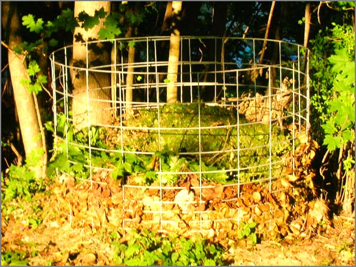
I then got the hooks where I wanted them and have a nice (but large) compost bin that is reasonably hidden in the corner of my back yard.
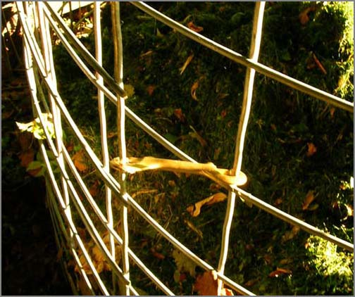
The I went for creating an arch. I originally planned for two half length arches next two each other, but after trying to bend the wire for the compost pile, I decided for just one full length arch. That also means that I can get under the arch without trouble.
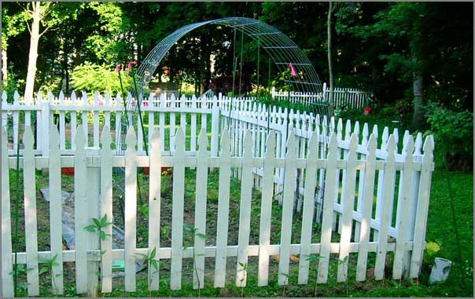
The arch was a lot easier to do and having just cut down a tree, I have an infinite supply of wood stakes plus some plastic coated green metal stakes.
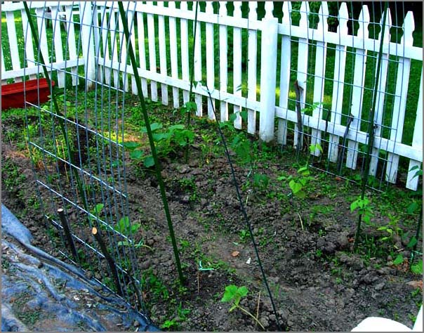
After the all the stakes were in place, I tied a couple a green lines from near the top of the arch for the beans to climb. Today I added a sweet pea to either side at the bottoms of the arch. Hopefully a couple more sweet peas germinate so that I can get a fully covered arch in a couple weeks.
By the way, watch out for those metal slivers (like quarter to half inch long) on the hog wire sections. I got skewered by one. I highly recommend strong gloves when working with this stuff.
06.29.2007 16:27
Boston Port Security Exhibition in July
Would like to check this out, but I
will not be able to make it. If anyone goes I would like to hear
about what the conference is like.
Security Seminar & Expo Set For Boston [marinelink]
Security Seminar & Expo Set For Boston [marinelink]
Boston Harbor will be the location for American Association of Port Authorities' (AAPA) 11th Port Security Seminar and Exhibition, July 18-20. The annual event will focus on practices and challenges faced by the port industry, giving participants further insight into one of the most critical issues affecting ports today. The seminar will also feature an exhibition area for vendors to showcase the latest in port security goods and services.
06.28.2007 14:30
Portsmouth Harbor Response Initiative
Yesterday was the Portsmouth
Harbor Response Initiative. I had many great discussions with
people from all over the local, regional and federal government
agencies.
The mapserver/openlayers/postgres/postgis system that I have been helping Rob Braswell and Michele Jacobi with worked very well. Here are some screen shots from the web gis app.
The mapserver/openlayers/postgres/postgis system that I have been helping Rob Braswell and Michele Jacobi with worked very well. Here are some screen shots from the web gis app.
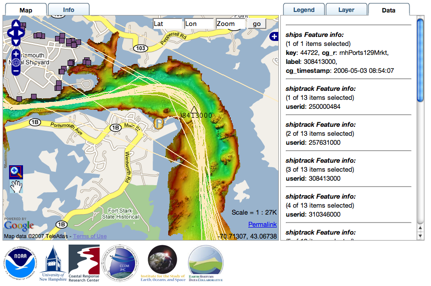
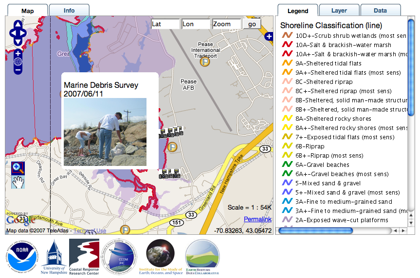
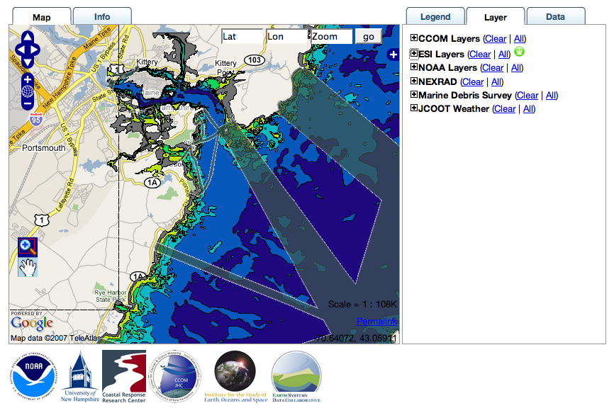
06.28.2007 14:17
SIO and Washington get the Orion Underwater Network Cyberinfrastructure grant
UC
San Diego Selected to Design, Build Cyberinfrastructure for Ocean
Observatories [ucsd news]
www.orionprogram.org
DI_Mayer_plenary.pdf
... The bulk of the cyberinfrastructure work will be done by computer scientists and engineers at UC San Diego. Based at the UCSD division of Calit2 and Scripps, the project will draw on expertise in grid computing and large-scale distributed networks at both organizations as well as the university's San Diego Supercomputer Center (SDSC) and National Center for Microscopy and Imaging Research (NCMIR). ...
www.orionprogram.org
DI_Mayer_plenary.pdf
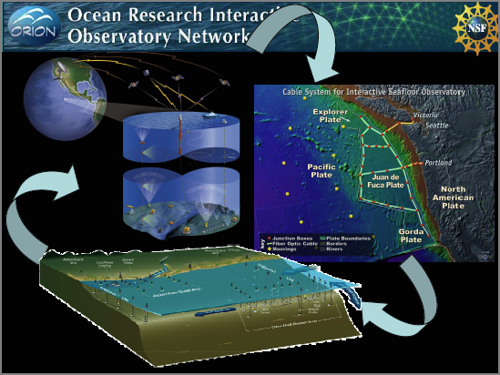
06.27.2007 16:14
It's hot out
Okay... it is hot out. The
thermometer outside my window says 95. Not quite what weather.com
is saying, but with the humidity, it is pretty bad outside and the
air quality is not great.
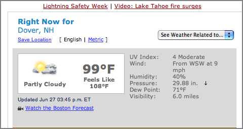
06.26.2007 10:32
New Klein L-3 K-CHIRP Model 3310
A new L-3 Klein offering with
combined CHIRP and sidescan. I can't find it on their products
page.
K-CHIRP Model 3310
L-3 Klein Debuts New Sub Bottom Profiler [marine technology reporter]
K-CHIRP Model 3310
L-3 Klein Debuts New Sub Bottom Profiler [marine technology reporter]
L-3 Klein has recently completed the design and development of a state-of-the-art CHIRP Sub Bottom Profiler (SBP) attachment for the 3000 Model Side Scan Sonar. "Observed performance and customer feedback from demos conducted with the SBP have us pretty excited since it has all been very positive" said Garry Kozak, Technical Sales Manager for L-3 Klein. The older SBP was a single transducer 3.5 kHz "pinger" and delivered satisfactory performance for a lightweight SBP, but lacked penetration and resolution. The new SBP has a two transmit transducers and linear hydrophone Mills Cross configuration for optimum "sea bottom footprint", as well as a CHIRP transmit pulse - this Sub Bottom Profiler produces excellent data. We are now taking orders for production deliveries of our new K-CHIRP Model 3310 Sub Bottom Profiler...
06.26.2007 10:26
Mac OSX Google Earth display way
Everyone and their cousin has blogged
about this already, but for completeness, I will too.
Display Wall with Google Earth on Mac OS X
Display Wall with Google Earth on Mac OS X
These screens are hooked to a series of Mac Pros, two displays per Mac Pro. The Macs are simply networked together via gigabit ethernet. Chromium will take any OpenGL app without modification, divide the display into segments and send those segments to the appropriate Mac node for rendering to display.
06.25.2007 08:43
Fish Cages - Check out this fish!
Ben and I were next to the F/V Stormy
Weather on Friday while she was catching fish for an experiment.
Check out the size of that fish!
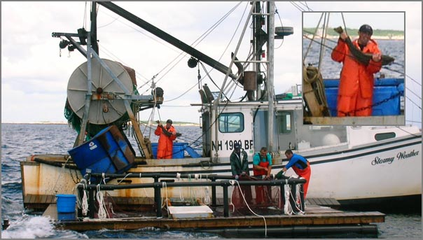
06.25.2007 08:37
AIS Class B in Bermuda
Nauticast B, the testing begins [panbo] - Ben Ellison talks
about Class B AIS, but not in the U.S.
06.24.2007 20:29
NOAA Coast Pilot
Just got this today:
National - Public Invited to Comment on the Collection of Information for Navigators NOAA periodically issues the U.S. Coast Pilot, a series of nine books that supplement the suite of nautical charts published by NOAA. It contains information, essential to navigators in U.S. coastal and intra-coastal waters, which cannot be readily displayed on the charts. The Coast Pilot Report is offered to the public as a means of facilitating suggested changes to the text. A paper form is used for this purpose. . Comments are invited on: a) whether the proposed collection of information is necessary; b) the accuracy of the agency's estimate of burden (including hours and cost) of the proposed collection of information; c) ways to enhance the quality, utility, and clarity of the information to be collected; and d) ways to minimize the burden of the collection of information on respondents, including through the use of automated collection techniques or other forms of information technology. . Written comments on this subject may be sent to dHynek@doc.gov until August 14, 2007. For more information, read the Federal Register notice or contact Thomas.Jackson@noaa.gov.
06.24.2007 15:55
S57 NOAA ENC into PostGIS
I've being trying to figure out how
to get NOAA S57 charts into a form that they could be injested into
a mapserver application. There are lots of ways to attack this
problem. S57 is a pretty confusing file format so the results of
parsing the file are less than obvious some times. The first thing
I often do with geospatial data is to throw it at Google Earth to
see if it sticks...
Ah, the joy of all the S57 codes. I am now sure that this is in fact the chart that I need to be able to display. What to do now? I thought about using ogr2ogr to produce a shapefile or gml file. The shapefile will not give the app enough flexibility. The GMT...
With a little help from the PostGIS mailing list, I found out that capitalization of the table matters and if the table within the db is not all lowercase, you need to quote the table name.
ogr2ogr -f KML US5NH02M.000.kml US5NH02M.000 open US5NH02M.000.kml
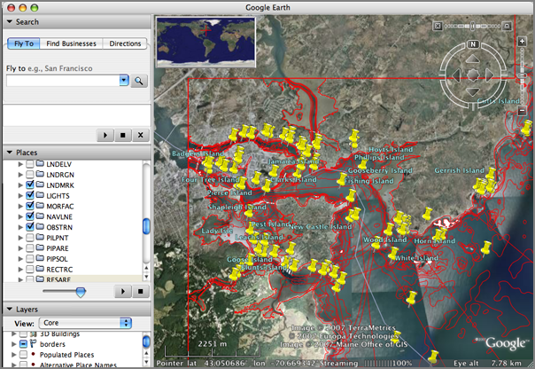
Ah, the joy of all the S57 codes. I am now sure that this is in fact the chart that I need to be able to display. What to do now? I thought about using ogr2ogr to produce a shapefile or gml file. The shapefile will not give the app enough flexibility. The GMT...
ogr2ogr -f GML US5NH02M.000.gml US5NH02M.000Here comes a big blob of GML. What did I buy myself by getting to GML? I can parse the GML with something like lxml, but why?
<?xml version="1.0" encoding="utf-8" ?>
<ogr:FeatureCollection
xmlns:xsi="http://www.w3.org/2001/XMLSchema-instance"
xsi:schemaLocation="http://ogr.maptools.org/US5NH02M.xsd"
xmlns:ogr="http://ogr.maptools.org/"
xmlns:gml="http://www.opengis.net/gml">
<gml:boundedBy>
<gml:Box>
<gml:coord><gml:X>-70.767309</gml:X><gml:Y>42.958403</gml:Y></gml:coord>
<gml:coord><gml:X>-70.56035199999999</gml:X><gml:Y>43.198644</gml:Y></gml:coord>
</gml:Box>
</gml:boundedBy>
<gml:featureMember>
<ogr:DSID fid="F0">
<ogr:DSID_EXPP>1</ogr:DSID_EXPP>
<ogr:DSID_INTU>5</ogr:DSID_INTU>
<ogr:DSID_DSNM>US5NH02M.000</ogr:DSID_DSNM>
<ogr:DSID_EDTN>6</ogr:DSID_EDTN>
<ogr:DSID_UPDN>0</ogr:DSID_UPDN>
<ogr:DSID_UADT>20070131</ogr:DSID_UADT>
<ogr:DSID_ISDT>20070131</ogr:DSID_ISDT>
<ogr:DSID_STED>3.100000</ogr:DSID_STED>
<ogr:DSID_PRSP>1</ogr:DSID_PRSP>
<ogr:DSID_PSDN></ogr:DSID_PSDN>
<ogr:DSID_PRED>2.0</ogr:DSID_PRED>
<ogr:DSID_PROF>1</ogr:DSID_PROF>
<ogr:DSID_AGEN>550</ogr:DSID_AGEN>
<ogr:DSID_COMT></ogr:DSID_COMT>
<ogr:DSSI_DSTR>2</ogr:DSSI_DSTR>
<ogr:DSSI_AALL>1</ogr:DSSI_AALL>
<ogr:DSSI_NALL>1</ogr:DSSI_NALL>
<ogr:DSSI_NOMR>7</ogr:DSSI_NOMR>
<ogr:DSSI_NOCR>0</ogr:DSSI_NOCR>
<ogr:DSSI_NOGR>5226</ogr:DSSI_NOGR>
<ogr:DSSI_NOLR>6</ogr:DSSI_NOLR>
<ogr:DSSI_NOIN>1775</ogr:DSSI_NOIN>
<ogr:DSSI_NOCN>3801</ogr:DSSI_NOCN>
<ogr:DSSI_NOED>4776</ogr:DSSI_NOED>
<ogr:DSSI_NOFA>0</ogr:DSSI_NOFA>
<ogr:DSPM_HDAT>2</ogr:DSPM_HDAT>
<ogr:DSPM_VDAT>16</ogr:DSPM_VDAT>
<ogr:DSPM_SDAT>12</ogr:DSPM_SDAT>
<ogr:DSPM_CSCL>20000</ogr:DSPM_CSCL>
<ogr:DSPM_DUNI>1</ogr:DSPM_DUNI>
<ogr:DSPM_HUNI>1</ogr:DSPM_HUNI>
<ogr:DSPM_PUNI>1</ogr:DSPM_PUNI>
<ogr:DSPM_COUN>1</ogr:DSPM_COUN>
<ogr:DSPM_COMF>10000000</ogr:DSPM_COMF>
<ogr:DSPM_SOMF>10</ogr:DSPM_SOMF>
<ogr:DSPM_COMT></ogr:DSPM_COMT>
</ogr:DSID>
</gml:featureMember>
<gml:featureMember>
<ogr:ACHARE fid="F0">
<ogr:geometryProperty><gml:Polygon srsName="EPSG:4326"><gml:outerBoundaryIs><gml:LinearRing><gml:coordinates>-70.733289999999997,43.072367 -70.73326,43.072369000000002 -70.733215,43.072360000000003 -70.733180000000004,43.072336 -70.733142999999998,43.072279000000002 -70.733118000000005,43.072184 ... -70.733289999999997,43.072367</gml:coordinates></gml:LinearRing></gml:outerBoundaryIs></gml:Polygon></ogr:geometryProperty>
<ogr:RCID>1</ogr:RCID>
<ogr:PRIM>3</ogr:PRIM>
<ogr:GRUP>2</ogr:GRUP>
<ogr:OBJL>4</ogr:OBJL>
<ogr:RVER>1</ogr:RVER>
<ogr:AGEN>550</ogr:AGEN>
<ogr:FIDN>124081007</ogr:FIDN>
<ogr:FIDS>2247</ogr:FIDS>
<ogr:LNAM>02260765536F08C7</ogr:LNAM>
<ogr:INFORM>Special Anchorage. Refer to charted regulation sections 110.1 & 110.10.</ogr:INFORM>
<ogr:SCAMIN>350000</ogr:SCAMIN>
<ogr:TXTDSC>US000531.TXT</ogr:TXTDSC>
<ogr:SORDAT>20001104</ogr:SORDAT>
<ogr:SORIND>US,US,graph,Chart 13283</ogr:SORIND>
</ogr:ACHARE>
</gml:featureMember>
</ogr:FeatureCollection>
What I really need is the S57 converted into a PostgreSQL/PostGIS
database. Mapserver can read right from a postgres database given
the right query. Here is the sequence of commands to get one chart
into the database:
createdb s57
sudo -u postgres /sw/bin/psql-8.2 -f /sw/share/doc/postgis82/lwpostgis.sql -d s57
ogr2ogr -f PostgreSQL PG:dbname=s57 US5NH02M.000
psql -l
List of databases
Name | Owner | Encoding
==========+==========+==========-
postgres | postgres | SQL_ASCII
s57 | schwehr | SQL_ASCII
template0 | postgres | SQL_ASCII
template1 | postgres | SQL_ASCII
psql s57
# Paste in the create command from pgadmin
ERROR: relation "FAIRWY" already exists
# Okay... so it looks like it is there until I try to select anything from it...
s57=# SELECT * FROM FAIRWY;
ERROR: relation "fairwy" does not exist
So at this point I am sure the data has been imported into the
database. I have pgAdminIII to prove it.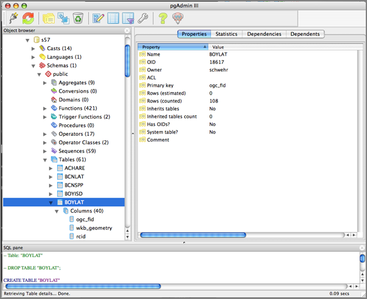
With a little help from the PostGIS mailing list, I found out that capitalization of the table matters and if the table within the db is not all lowercase, you need to quote the table name.
s57=# SELECT AsText(wkb_geometry) FROM "BOYLAT" LIMIT 10;
astext
===============================
POINT(-70.745023 42.999482)
POINT(-70.7437958 42.9990228)
POINT(-70.7202403 43.0121733)
POINT(-70.6986483 43.0238372)
POINT(-70.6910433 43.0493536)
POINT(-70.6217669 42.9781536)
POINT(-70.6203161 42.9931636)
POINT(-70.74274 43.054381)
POINT(-70.741637 43.055017)
POINT(-70.74057 43.056289)
(10 rows)
Now we need to work on the mapserver side of the house.06.22.2007 08:14
UNH GPS Continuously Operating Reference Station (CORS)
Semme is teaching the CCOM/JHC
hydrographic surveying course right now. He pointed the students to
a great local resource. UNH has a GPS Cntinuously Operating
Reference STation (CORS).
http://fac-gis.unh.edu/
http://fac-gis.unh.edu/
06.21.2007 08:52
How did that get there?
All I can say is "Doh!" How did that
get there. The page header has my last name mispelled, but the
critical front page has my name spelled right. I'm not offering
money for mistakes as Knuth does, but I am always bumbed out to
find any sort of problem with my published material. Note to self:
You can never spend too much time checking the final couple of
versions in the publishing process.
06.20.2007 21:35
First Public Release of CLARAty Software
First
Public Release of CLARAty Software
I left NASA Ames and switched to CMU just as CLARAty was kicking off. I worked on some of the predecesors to CLARAty and know many of the folks that have worked on CLARAty over the last 10 years. It is really great to have this code at least partially visible to the outside world. I would have prefered a more open license such as the GPL and a clear path to a tarball would be nice. I always push for more, but this is fantastic!
I left NASA Ames and switched to CMU just as CLARAty was kicking off. I worked on some of the predecesors to CLARAty and know many of the folks that have worked on CLARAty over the last 10 years. It is really great to have this code at least partially visible to the outside world. I would have prefered a more open license such as the GPL and a clear path to a tarball would be nice. I always push for more, but this is fantastic!
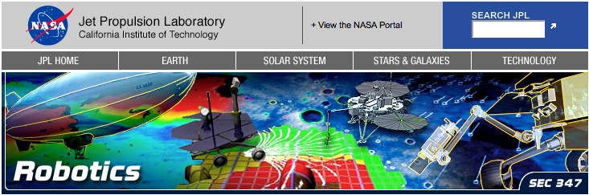
06.20.2007 21:28
mac osx dmesg
dmesg is an old friend on linux, but
I never thought to look for it on the Mac. I just found out it is
there, but it doesn't feel like the same thing as what is on a
linux box.
Mac:
ubuntu linux:
Mac:
dmesg sleep System Wake Wake event 0008 ADB present:8c AirPort: Link Active: "CCOMCAP2" - 00xxxxxxxxx - chan 11 AirPort: Link DOWN (Client disAssoc 0) System Sleep IOBluetoothHCIController::restartShutdownWL this is a wake from sleep System Wake Wake event 0008 ADB present:8c AirPort: Link Active: "CCOMCAP2" - 00xxxxxxxxxx - chan 11 AirPort: Link DOWN (Client disAssoc 0) System Sleep IOBluetoothHCIController::restartShutdownWL this is a wake from sleep System Wake Wake event 0008 ADB present:8c AirPort: Link Active: "unhwireless" - 00xxxxxxxxx - chan 1 ...
ubuntu linux:
dmesg | head [ 0.000000] Bootdata ok (command line is root=UUID=xxxxx-xxxx-xxx-xxx ro console=ttyS1,57600 vga=normal) [ 0.000000] Linux version 2.6.17-11-server (root@king) (gcc version 4.1.2 20060928 (prerelease) (Ubuntu 4.1.1-13ubuntu5)) #2 SMP Fri May 18 22:26:16 UTC 2007 (Ubuntu 2.6.17-11.38-server) [ 0.000000] BIOS-provided physical RAM map: [ 0.000000] BIOS-e820: 0000000000000000 - 00000000000a0000 (usable) [ 0.000000] BIOS-e820: 0000000000100000 - 000000007ffa8000 (usable) [ 0.000000] BIOS-e820: 000000007ffa8000 - 000000007ffb7c00 (ACPI data) [ 0.000000] BIOS-e820: 000000007ffb7c00 - 0000000080000000 (reserved) [ 0.000000] BIOS-e820: 00000000e0000000 - 00000000f0000000 (reserved) [ 0.000000] BIOS-e820: 00000000fe000000 - 0000000100000000 (reserved) [ 0.000000] DMI 2.4 present. ...I have to say that I prefer the Linux version where I have some chance of using the output to debug problems.
06.20.2007 13:57
noaadata 0.28
Just released noaadata-py 0.28 with
some fixes for PostGIS data import such that things should work
smoother for feeding mapserver data.
- PostGIS now uses WGS84 explicitly so that it works with mapserver
- PostGIS import of AIS now warns (not fails) on bad insertions
- ais_normalize now has a configurable time window for joining messages
06.19.2007 20:08
Counting distinct entries in a SQL table
While working over in Morse Hall
today I learn a great SQL trick. This command counts the number of
items of each value for a table.
sqlite3 2007-05.db3 SQLite version 3.3.12 Enter ".help" for instructions sqlite> SELECT shipandcargo,count(*) FROM shipdata GROUP BY shipandcargo; 80|3 81|2 90|53Which leads me to realize that the following two commands are identical.
sqlite> SELECT UserID FROM shipdata GROUP BY UserID ORDER BY UserID; 220396000 338029917 538001583 636012377 sqlite> SELECT DISTINCT(UserID) FROM shipdata ORDER BY UserID; 220396000 338029917 538001583 636012377Now which one is faster?
06.19.2007 06:07
GENI - Global Environment for Network Innovations
I had not heard of the NSF GENI project until yesterday. Looks like
BBN is involved with is historically interesting with their role in
the initial internet development.
GENI is an experimental facility called the Global Environment for Network Innovation. GENI is designed to allow experiments on a wide variety of problems in communications, networking, distributed systems, cyber-security, and networked services and applications. The emphasis is on enabling researchers to experiment with radical network designs in a way that is far more realistic than they can today. Researchers will be able to build their own new versions of the "net" or to study the "net" in ways that are not possible today. Compatibility, with the Internet is NOT required. The purpose of GENI is to give researchers the opportunity to experiment unfettered by assumptions or requirements and to support those experiments at a large scale with real user populations.
06.18.2007 21:30
fire flies
Tonight was an amazing evening
outside. Perfect weather and this was the first time this season
that the neighbors and I have seen fire flies/lightning bugs. Made
my day.
06.18.2007 14:34
Fun with SQL - AIS ship reports
This is something I have wanted to
get done for quite a few months. This code builds a table with ship
sizes and the cargo while trying to do as much as possible in SQL.
A fair bit of prep work
#!/usr/bin/env bash
for file in 2007-??.5.db3; do
sqlite3 $file "DROP TABLE shipandcargoLUT;"
../build_sqlite_shipandcargo.py $file
out=${file%%db3}csv
echo $out
echo "See http://vislab-ccom.unh.edu/~schwehr/software/noaadata/ais-messages/ais_msg_5.html" > $out
echo "MMSI is the same as UserID" >> $out
echo "MMSI,IMOnumber,callsign,name,shipandcargo,length,width,dimA,dimB,dimC,dimD,ship,cargo_maybe" >> $out
sqlite3 $file 'SELECT found.UserID,IMOnumber,callsign,name,shipdata.shipandcargo,\
dimA+dimB,dimC+dimD,dimA,dimB,dimC,dimD,shipandcargoLUT.text \
FROM shipdata,found,shipandcargoLUT \
WHERE shipdata.UserID=found.UserID AND shipdata.shipandcargo=shipandcargoLUT.shipandcargo'\
| tr '|' ',' | tr '@' ' ' | sort -un >> $out
done
Here is the build_sqlite_shipandcargo.py that does a quick
lookuptable (LUT) build.
#!/usr/bin/env python
import sys, os
from lxml import etree
import pysqlite2.dbapi2 as sqlite
import pysqlite2.dbapi2
#
cx = sqlite.connect(sys.argv[1])
cu = cx.cursor()
#
cu.execute('CREATE TABLE shipandcargoLUT ( shipandcargo INTEGER, text VARCHAR(100) );')
cx.commit()
#
aisMsgsET = etree.parse('/Users/schwehr/projects/src/noaadata/ais/ais_msg_5.xml').getroot()
results = aisMsgsET.xpath('*/field[@name="shipandcargo"]/lookuptable/entry')
#
cu.execute('INSERT INTO shipandcargoLUT (shipandcargo,text) VALUES (0,"unknown,unknown");')
for val in range(1,11):
insStr='INSERT INTO shipandcargoLUT (shipandcargo,text) VALUES ('+str(val)+',"'+str(val)+',unknown/invalid");'
cu.execute (insStr)
cx.commit()
#
for val in range(10,20):
insStr='INSERT INTO shipandcargoLUT (shipandcargo,text) VALUES ('+str(val)+',"reserved,reserved");'
cu.execute (insStr)
cx.commit()
#
for entry in results:
key=entry.attrib['key']
text=entry.text
cu.execute ('INSERT INTO shipandcargoLUT (shipandcargo,text) VALUES ('+key+',"'+text+'");')
cx.commit()
The resulting CSV file looks like this in Excel.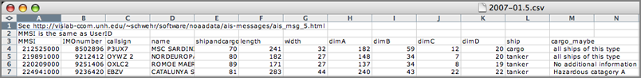
06.18.2007 12:10
Log book growth
I just noticed that my electronic log
book for this year is substantially larger than my previous ones.
(And thanks to Anne W. for getting me into logging this way.)
wc -l ~/projects/doc/kurt-200*
12163 /Users/schwehr/projects/doc/kurt-2004.txt
6644 /Users/schwehr/projects/doc/kurt-2005.txt
19332 /Users/schwehr/projects/doc/kurt-2006.txt
76241 /Users/schwehr/projects/doc/kurt-2007.txt
114380 total
Now if I can only switch over to an XML form for a log
book...06.18.2007 11:18
NOAA/USCG Guide to Right Whale Protection
NOAA,
USCG Provide Commercial Mariners with Guide to Right Whale
Protection [marinelink.com]
The National Oceanic Atmospheric Administration Fisheries Service and the U.S. Coast Guard announce the availability of "A Prudent Mariner's Guide to Right Whale Protection" - an interactive, multi-media CD program that serves as a guide and voluntary training resource for commercial mariners operating in right whale habitats along the U.S. Atlantic coast. . The CD, distributed free-of-charge upon request, provides a comprehensive collection of right whale information delivered in a compact and user-friendly format. The program includes: crew training information about right whales, recommended navigational actions when operating in right whale habitat, a guide to reporting sightings of dead or injured right whales, an informative video presentation, and a short follow-up quiz. It also provides guidelines for compliance with the Mandatory Ship Reporting Systems, including an innovative, interactive report generation program, as well as key supplementary information contained in a separate "Media" folder, such as video clips, information about the current Mandatory Ship Reporting areas, and diagrams of the recently implemented, recommended traffic lanes in right whale high-use areas.
06.17.2007 22:49
Weekend update - mapserver in fink
I have been working some this weekend
on getting mapserver setup with more capabilities enabled. This is
taking way more effort than I expected. I am hoping that I can get
the latest mapserver setup with php5-mapscript, python scripting,
and tested postgis feeds.
The trouble started with apache2. That was a bad start. For some reason, the apache2-common deb file has /sw/etc/apache2/{apache2,httpd}.conf, but something is preventing those files from getting installed in fink. I went for a big hack to get apache2 installed... these next few lines are really dangerous!
After all that, I am pretty sure that apache2 is not happy:
After that, I gave a look at getting mapserver going with php5.
The trouble started with apache2. That was a bad start. For some reason, the apache2-common deb file has /sw/etc/apache2/{apache2,httpd}.conf, but something is preventing those files from getting installed in fink. I went for a big hack to get apache2 installed... these next few lines are really dangerous!
fink install apache2-common cd /sw/etc/apache2 sudo rm -rf * # danger! sudo dpkg -x /sw/fink/debs/apache2-common_2.0.59-11_darwin-powerpc.deb . sudo mv sw/etc/apache2/* . sudo rm -rf sw fink -y install apache2Then I had more trouble getting php5 to install.
fink install libapache2-ssl-mod-php5 fink install libapache2-mod-php5
After all that, I am pretty sure that apache2 is not happy:
sudo nmap -A -T4 localhost Starting Nmap 4.20 ( http://insecure.org ) at 2007-06-17 22:21 EDT Interesting ports on localhost (127.0.0.1): Not shown: 1456 closed ports, 234 filtered ports PORT STATE SERVICE VERSION 22/tcp open ssh OpenSSH 4.5 (protocol 1.99) 80/tcp open http? 631/tcp open ipp CUPS 1.1 1033/tcp open rpc.unknown 3689/tcp open rendezvous Apple iTunes 7.2 6000/tcp open X11 (access denied) 9876/tcp open sd? Device type: general purpose Running: Apple Mac OS X 10.4.X OS details: Apple Mac OS X 10.4.8 (Tiger) Network Distance: 0 hops Service Info: OSs: Mac OS X, UnixThat "?" after http shows that apache is not correctly configured. I am not really used to dealing with apache2, so I am not really sure what to expect.
ps -aux | egrep 'apache|http' root 1831 0.0 0.3 57648 3424 ?? Ss 4:52PM 0:00.97 /sw/sbin/apache2 -k restart www 23498 0.0 0.1 60324 1464 ?? S 10:22PM 0:00.01 /sw/sbin/apache2 -k restart www 23499 0.0 0.1 60324 1240 ?? S 10:22PM 0:00.01 /sw/sbin/apache2 -k restartOr I could also do a "sudo lsof -nP | grep TCP"
After that, I gave a look at getting mapserver going with php5.
configure: checking whether we should enable debug features...
configure: checking for PHP/MapScript module options...
PHP/MapScript module not configured.
checking for g++ -dynamiclib ... yes
configure: error:
!!! The current version of PHP MapScript requires PHP4 configured as !!!
!!! a CGI and cannot be used with PHP4 configured as an Apache module,!!!
!!! so you cannot use the --with-apxs option. !!!
!!! See: http://mapserver.gis.umn.edu/cgi-bin/wiki.pl?PHPMapScriptCGI !!!
make: *** No targets specified and no makefile found. Stop.
Doh! But it looks like this is possible as Debian has got a
php5-mapserver: http://packages.qa.debian.org/m/mapserver.html.
So maybe if I switch to the php5-cgi it will work? I read through
the diff at the bottom left of the page, but not much really jumped
out at me.06.15.2007 14:58
OpenSceneGraph (osg) releases 2.0
This is big news for one of my
projects! OpenSceneGraph (osg) has
released version 2.0. (Thanks to mdp for the pointer.)
OpenSceneGraph 2.0 release improves ease-of-use and scalability, introducing new osgViewer, osgShadow and osgManipulator libraries, new build system, improved multi-core, multi-GPU support.
PERTHSHIRE, Scotland - 15th June 2007 - OpenSceneGraph Professional Services announces the release of OpenSceneGraph 2.0, the industry's leading open-source scene graph technology, designed to accelerate application development and improve 3D graphics performance. OpenSceneGraph 2.0, written entirely in Standard C++ and built upon OpenGL, offers developers working in the visual simulation, game development, virtual reality, scientific visualization and modeling markets a real-time visualization tool which rivals established commercial scene graph toolkits in functionality and performance. OpenSceneGraph 2.0 runs on all Microsoft Windows platforms, Apple OS/X, GNU/Linux, IRIX, Solaris, HP-UX, AIX and FreeBSD operating systems.
06.15.2007 09:51
aquaemacs for mac
I have a new recommended text editor
for Mac people. Aquaemacs has
reached version 1.0 and now seems stable. In passed versions it
crashed on me right away. Now it seems stable and fast. Now if I
can figure out how to reverse foreground and background
colors!
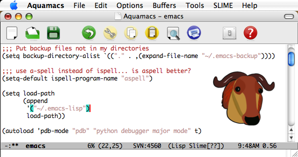
06.12.2007 12:25
Google's help model a city
Here is a great idea. Please help
contribute models! That is great to see these 4 initial locations,
but how about Norfolk, VA and Portmouth, NH? I need to learn how to
do this and kick off those cities.
3dwarehouse - help model a city [sketchup.google.com]
3dwarehouse - help model a city [sketchup.google.com]
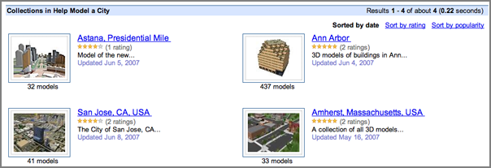
06.09.2007 10:02
ossimplanet 1.6.8
slashgeo has an article
saying that ossimplanet 1.6.8 is out. The feature list sounds good
with initial kml support in there! The article has links to
binaries for windows and mac.
06.08.2007 11:41
Google's geocoding of Mendums Pond
Check out this image of Mendum's
Pond. Google has the lake on top of roads and it is missing the
access roads for UNH down to the rec and sailing areas. The polygon
is over 600m off.
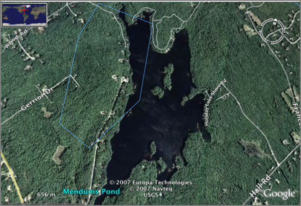
06.08.2007 11:18
MercuryNews on Humpback whales
Endangered humpbacks
repopulate swimmingly, SCIENTISTS WEIGH LESS PROTECTION, By
Jeff Thomas.
An unprecedented count of endangered humpback whales - like the two that made a lengthy side trip into the Sacramento Delta recently - is revealing a comeback so convincing that marine scientists are pondering a controversial question: . Is it time for the whales, hunted to near-extinction in the 20th century, to have less protection under the federal Endangered Species Act? . "The standard is whether they are out of the immediate risk of extinction. The answer to that is probably yes," said Jay Barlow, a marine biologist with the National Oceanic and Atmospheric Administration. But, he said, "there likely will be resistance" if such an effort begins. . Although most experts and advocates agree the Eastern humpback is making impressive gains, they disagree about what that should mean for protection of one of the most iconic species in the animal kingdom. ...
06.07.2007 11:23
mapserver 4.10.2 in fink
I've just put mapserver 4.10.2 in
fink 10.4 unstable. Please give me feedback. Anyone using postgres
and mapserver via fink, please comment. I updated the dependencies
to switch to postgres/postgis 8.2 as discussed. I am thinking about
if/how to add the mapscript support.
http://groups.google.com/group/fink-gis
http://groups.google.com/group/fink-gis
06.07.2007 11:21
NAIS presentation at the May 2007 RTCM
I found on the naisproject.net page an updated
presentation on the USCG's thoughts about NAIS:
NAIS_RTCM_brief_May_2007.Pdf
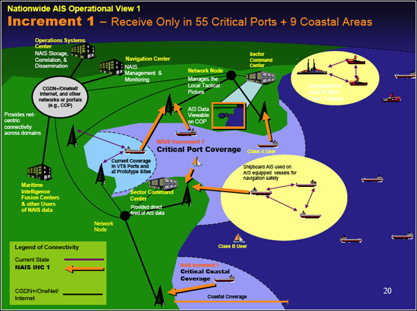
06.07.2007 08:45
gigapan
Gigapan got a
mention the
Google Earth Blog ISDE5 Summary. Randy and Anne have done some
really killer work. I took a look at the list of participants and
was blown away. This is really growing! Team... the
usual cast and crew from NASA ARC who always do great stuff (yeah,
I'm biased by working there in the last century) and check out this
list:
Michael Ashbridge, Google Earth Jenifer Austin, Google Earth Outreach Amin Charaniya, Google Earth Dan Clancy, Google Lev Golub, Google Earth Bent Hagemark, Google Earth John Johnson, Google Earth Brian McClendon, Google Earth Rebecca Moore, Google Earth Chikai Ohazama, Google Earth John Rohlf, Google Earth Kenson Yee, Google Earth The rest of the Google Earth Team!If you have not checked out gigapan, you really should!
06.07.2007 08:37
intelesense uses worldwind
Intelesense Technologies
sounds interesting in that they combine sensors with NASA's
WorldWind visualization software. Created by people from NASA and
Stanford. Hmm... that sounds like a familiar combination.
06.07.2007 08:18
Stellwagen Sanctuary news
Two news items from the NOAA
Stellwagen Bank National Marine Sanctuary:
NOAA Stellwagen Bank Sanctuary Shipwreck Paul Palmer Listed on National Register of Historic Places
Stellwagen Bank 2007 Condition Report [PDF]
NOAA Stellwagen Bank Sanctuary Shipwreck Paul Palmer Listed on National Register of Historic Places
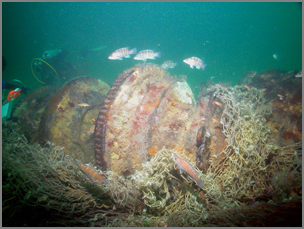
Stellwagen Bank 2007 Condition Report [PDF]
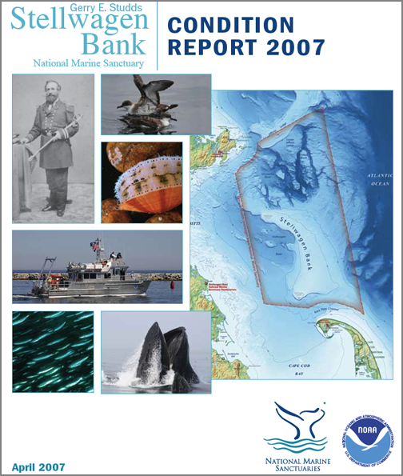
06.06.2007 08:00
AUV trip to Mendum's Pond
Yesterday, Roland and I took Doerri
(a Fetch AUV) to Mendum's Pond. We were right down by the UNH Sailing team
dock.
The AUV heading off into the lake just after the crazy thunder storm passed by.
Roland running the AUV through a range of "missions" using a Freewave ethernet bridge for a connection to send over the missions.
Me driving the AUV... trying to figure out the LabView interface.
Roland's water level shot of the AUV approaching the dock. Attack of the AUV.
Over my sholder looking at a VNC relay of the sidescan software running on the fish. VNC to a remote AUV is not the best way to get at the data, but it does sort of work (if you wait long enough).
Scenic shot of the Medum's Pond.
Roland trying out the 802.11 wireless. The antenna is inside the hull of the fish, so the range is not nearly as good as the Freewave that is located in the mast.
Same as above.
The LabView based user interface (UI).
The AUV heading off into the lake just after the crazy thunder storm passed by.
Roland running the AUV through a range of "missions" using a Freewave ethernet bridge for a connection to send over the missions.
Me driving the AUV... trying to figure out the LabView interface.
Roland's water level shot of the AUV approaching the dock. Attack of the AUV.
Over my sholder looking at a VNC relay of the sidescan software running on the fish. VNC to a remote AUV is not the best way to get at the data, but it does sort of work (if you wait long enough).
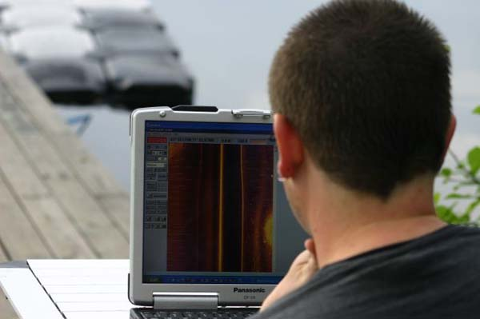
Scenic shot of the Medum's Pond.
Roland trying out the 802.11 wireless. The antenna is inside the hull of the fish, so the range is not nearly as good as the Freewave that is located in the mast.
Same as above.
The LabView based user interface (UI).
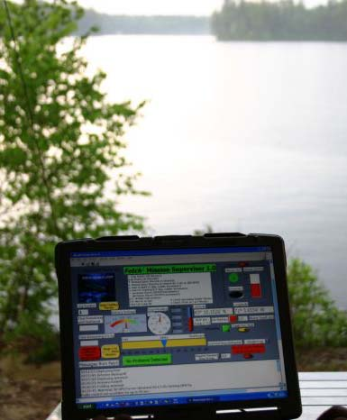
06.06.2007 07:51
Camino 1.5
I just downloaded Camino 1.5. I prefer Camino
over Firefox for my laptop. It seems to run a lot faster than
firefox. There is one thing that I can't stand. I like the Firefox
search bar that appears at the bottom. Camino pops up a find window
that drives me nuts.
With my 30 second test before posting run, I can say that Camino "works for me."
I also see that there is an update for NetNewsWire, but I have yet to grab that.
With my 30 second test before posting run, I can say that Camino "works for me."
I also see that there is an update for NetNewsWire, but I have yet to grab that.
06.04.2007 13:26
SMART Rivers 2007 conference in Sept
SMART RIVERS 2007:
September 16 - 19, 2007, Louisville, KY, USA.
The conference description:
The conference description:
Join us in Louisville, KY, for this three-day technical specialty conference and technical tours. The 2007 conference will be the 3rd in a series of international joint conferences on synergies for an efficient waterway system in Europe and the U.S. Smart Rivers 21 is an international coalition intent on realizing "Strategic Maritime Asset Research and Transformation for 21ST Century River Systems," which was started in 2004 by a cooperation agreement between US and European partners. The first conference was held in 2005 in Pittsburgh, and the second was held in 2006 in Brussels. The 2007 conference is a continuation of this cooperation, and is expected to draw more than 200 port and waterway executives, policy and technical professionals from the U.S., Europe and Latin America. The objective of the event is to share knowledge and experience, and to work for a better and more efficient integration of inland waterways (rivers and channels) into an integrated intermodal transport system.